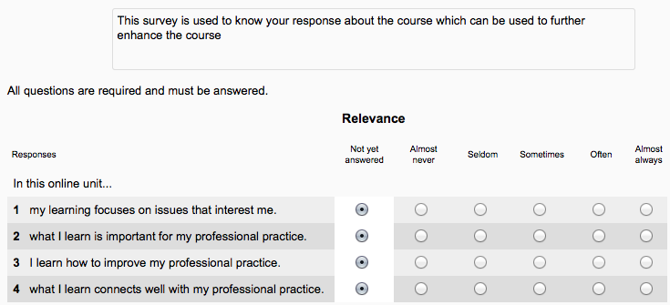

The Survey module is a course activity that provides a number of verified survey instruments, including COLLES (Constructivist On-Line Learning Environment Survey) and ATTLS (Attitudes to Thinking and Learning Survey), which have been found useful in assessing and stimulating learning in online environments. Teachers can use these to gather data from their students that will help them learn about their class and reflect on their own teaching.
Note: Moodle’s survey module uses pre-made questions. If you wish to create your own questions, use the Feedback module or contributed Questionnaire module.
With the editing turned on, in the section you wish to add your survey, click the “Add an activity or resource” link (or, if not present, the “Add an activity” drop down menu )and choose Survey. All settings may expanded by clicking the “Expand all” link top right.
Name
Whatever you type here will form the link learners click on to do the survey so it is helpful to give it a name that suggests its purpose.
Survey type
Choose your survey type here. See Types of survey below for an explanation of the items in this drop down menu.
Description
Add a description of your survey here. Click “Show editing tools” to display the rich text editor, and drag the bottom right of the text box out to expand it.
Display description on the course page
If this box is ticked, the description will appear on the course page just below the name of the survey.
(These settings are collapsed by default)
These settings are visible if Conditional activities and Activity completion have been enabled in the site and the course.
The available surveys have been chosen as being particularly useful for evaluating online learning environments that use a constructivist pedagogy. They are useful to identify certain trends that may be happening among your participants.
The COLLES comprises an economical 24 statements grouped into six scales, each of which helps us address a key question about the quality of the on-line learning environment:
- Relevance How relevant is on-line learning to students’ professional practices?
- Reflection Does on-line learning stimulate students’ critical reflective thinking?
- Interactivity To what extent do students engage on-line in rich educative dialogue?
- Tutor Support How well do tutors enable students to participate in on-line learning?
- Peer Support Is sensitive and encouraging support provided on-line by fellow students?
- Interpretation Do students and tutors make good sense of each other’s on-line communications?
Underpinning the dynamic view of learning is a new theory of knowing: social constructivism, which portrays the learner as an active conceptualiser within a socially interactive learning environment. Social constructivism is an epistemology, or way of knowing, in which learners collaborate reflectively to co-construct new understandings, especially in the context of mutual inquiry grounded in their personal experience.
The COLLES has been designed to enable you to monitor the extent to which you are able to exploit the interactive capacity of the World Wide Web for engaging students in dynamic learning practices.
ATTLS - Attitudes to Thinking and Learning Survey
The theory of ‘ways of knowing’, provides us with a survey tool to examine the quality of discourse within a collaborative environment.
The Attitudes Towards Thinking and Learning Survey (ATTLS) is an instrument developed by Galotti et al. (1999) to measure the extent to which a person is a ‘connected knower’ (CK) or a ‘separate knower’ (SK).
In Administration > Survey administration > Locally assigned roles, selected users can be given additional roles in the activity.
Role permissions for the activity can be changed in Administration > Survey administration > Permissions.